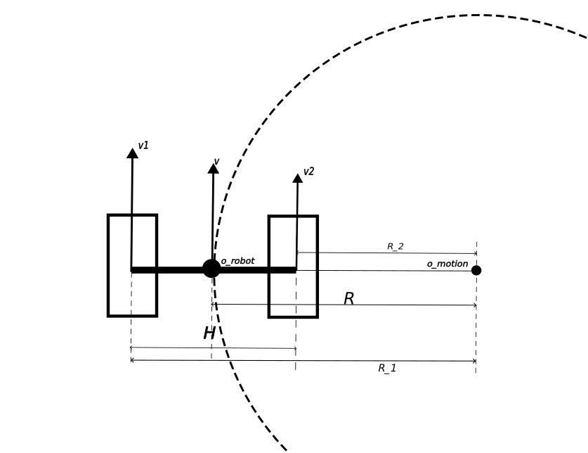
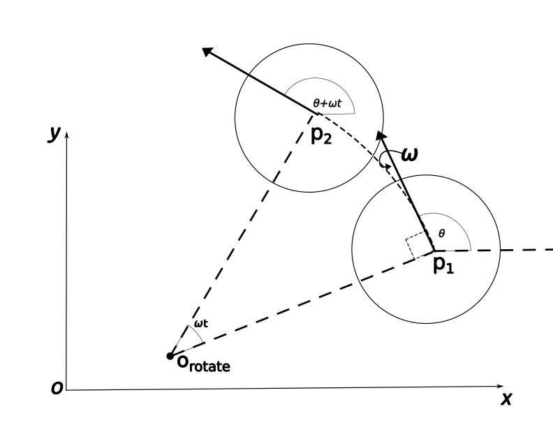
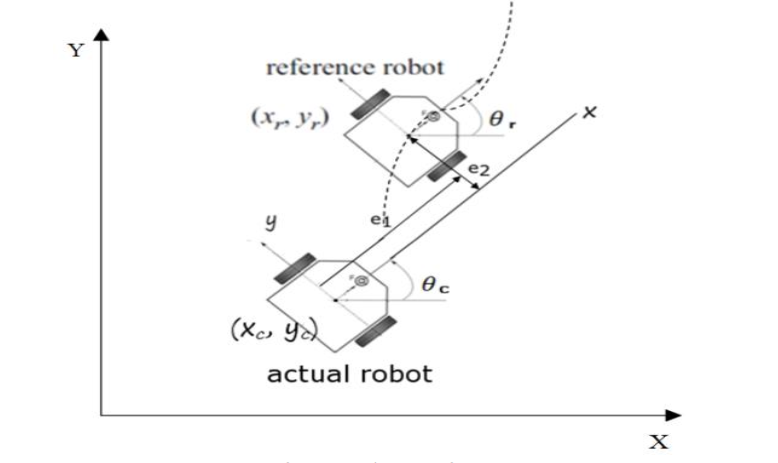
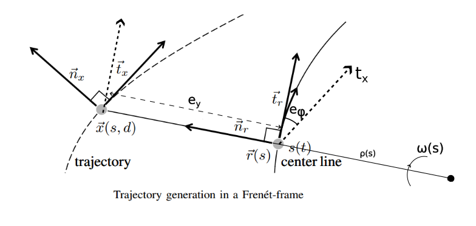

- key word: differential drive motion， error model, DWR
reference
小鱼ROS：机器人模型 [Probalilistic Robotics:5.3.3]
运动形式
轮式机器人一种常见的构型如下，由两个独立驱动的轮子驱动(有一个或多个随动轮来支撑)，如下图所示:

机器人可能在做直线运动或圆弧运动：- 当=时: 机器人作直线运动，此时位于无穷远处，==
- 当!=时：
- 当与为同方向时， 机器人绕远处圆心，做圆周运动 机器人作圆弧运动，此时有
其中为两个驱动轮的距离， 为两轮中心的运动半径。
- 当异号或其中一个为零时: 差动机器人作绕自身中心的自转(因为力矩中心位于机器人两轮中心)，机器人中处的线速度为零，其角速度为：
通过上式可求解差速机器人作圆周运动时两轮速度与两轮中心处的之间的解算关系。
- 已知求解称作正运动学:
- 已知求解称作逆运动学:
上面便是机器人当中的正逆解的概念，也完成了轮速与运动线速度与角速度之间的推导。
机器人点运动控制指令便可解算为差速机器人点两个轮子点速度指令，该计算逻辑可以设计为独立的低层驱动内。
运动更新模型
直线运动更新
将运动分解为直线运动位置更新+圆弧运动角度更新两部分，其运动更新模型可写为以下模式（通常用在有高频率点里程计位置点应用中）：
如果用上述运动模型去做轨迹追踪，可能还需要考虑圆弧运动约束
圆弧运动更新
实际上，上述直线运动更新是简化的。因为差速机器人只要有那么就是在做圆弧运动。下面介绍以圆弧运动进行运动更新：

- 通过位置，求解其旋转点坐标:
- 然后通过旋转中新坐标更新点坐标:
该更新模型适用于里程计的更新
误差更新模型
ref: [paper](Differential-Drive Mobile Robot Control Design based-on Linear Feedback Control Law)
机器人追踪到目标点时的位姿用reference robot()表示如下图所示：

当前车辆车辆位姿为. 误差模型有两种表示方式：- 将路径上点追踪点投影到车辆本地坐标系中，路径点在车辆坐标系中的横坐标即为纵向误差, 纵坐标即为横向误差.
- 将车辆坐标投影到路径点上， 车辆在路径点本地坐标中的横坐标即为纵向误差, 纵坐标即为纵向误差.
本质上这两中误差模型是一样的，差别仅在于符号.
下面以第一种形式（将路径点投影到车辆坐标系中）进行误差跟踪模型的推导。 将轨迹点投影到车辆坐标系可表达为:
对上式展开求导得以下形式：
经过类似整理，写为矩阵形式：
其中可以根据跟踪曲线进行计算。
将车辆坐标投影到轨迹点上点误差模型
只需要将与的系数矩阵对调即可:
SL坐标系(Frenet坐标系)下的差动模型
ref: [paper](Optimal Trajectory Generation for Dynamic Street Scenearios in a Frenet Frame) SL坐标系介绍参见Frenet frame 运动状态可以表示为(相比于时域模型增加了曲率k信息):
该状态可投影到笛卡尔坐标系:
Frenet坐标系下的轨迹表示如下图所示:

源图片来源[Optimal Trajectory Generation for Dynamic Street Scenearios in a Frenet Frame] fig.2
由上面差速模型可知时域运动模型为:
下面把时域运动模型转换到Frenet空间域中: 定义空间域中的一阶导数表示， 时域内的导数为, 根据求导链式法则可得 定义为运动物体的速度在其对应SL坐标的S轴上的投影(即参考线或中心线上对应点的切线方向投影)。 由上图可知(假设无滑移情况):
其中为参考线上的角速度. 由上式可以求得:
故SL坐标系下的运动方程为:
注意到上面的运动公式已经与速度解耦。
SL坐标系(Frenet坐标系)下ackman小车运动方程:
经过类似推倒可得:
从上面可以看出，若以曲率k作为参数则可以将差动机器人及ackman小车的横向运动模型统一起来。